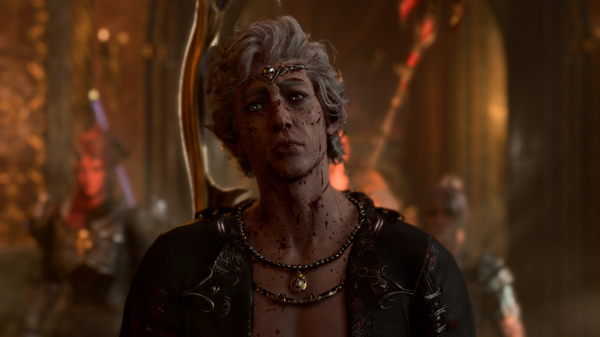

I almost lost you....
aka Astarion's worst nightmare
Chris and Astarion entered Cazador's dungeon, a sense of dread came upon the vampire spawn. He never saw any of
what Cazador kept under the palace. "What in the hells?" He looked around, trying to find any kind of
resemblance with what he knew. Astarion looked at Chris, gods he loved that man so much. He was getting
distracted by how beautiful he was. He had so gentle features on his face, those magnificent long silvery hair.
He was such a beautiful work of art, if he were a painting, he would have been painted by the most talented
painter in all of faerûn.
As they advanced in the dungeon, Astarion saw Sebastian again. He was terrified how everything made him feel. He
just wanted to feel whole again. He wanted to feel safe. This is why doing the ascension mean so much to him.
The emotions that he felt before facing Cazador could be summoned in one word : dread. He looked at Chris, and
he gently put his arms around him. "Are you feeling alright?" It was obvious that Chris was worried about
the
pale elf, but he didn't want anyone to worry about him, but he did share some vulnerable stuff with him.
"I...I'll be alright as soon as we finish this"
Astarion started to walk down toward Cazador, the two centuries of slavery, of torment came back to him. Like it
could have left him. He really struggled to keep himself together, but he just wanted to get his revenge on
Cazador. As he continued to walk down the stairs, he realized that Cazador had disappeared. "Where did he
go?"
He looked around, and he was nowhere to be found... but so was Chris. "Show yourself!" Screamed
Astarion. He
was not scared of Cazador right now, not after he dared touch Chris.
Astarion was frantically searching for the both of them. He tried to push away the thought that Cazador might do
something to the man he loved. The two others that were with him, Karlach and Shadowheart, tried to calm him
down. "We'll find him, Astarion, I promise. Where do you think he could have taken him? You know this place
better than anyone," said Shadowheart. She was right, he knew this place better than anyone else. He had
to
calm down and think with his smoothed brain. The dungeon didn't seem to have a place like that. Cazador must
have taken Chris upstairs. "We have to go back up again." Astarion led them to Chris. He looked at the
two
companions and was happy that these two were with him for this.
They got upstairs and found Chris and Cazador together, in the ballroom. "You're too late, boy-" Cazador
was
holding Chris."Did you think, I haven't been following you once you escaped? How you felt for this pathetic
kettle." After saying this, Cazador sank his fangs into Chris's neck. Astarion was taken aback by what he
just
did. He knew all too well what this meant. If he drank too much and Chris would get buried... He rushed toward
Cazador but doing this Cazador let Chris's lifeless body hang from his arms. "Son of a bitch" Astarion
was
completely distraught at what just happened. He killed him, and he had to take his body back, this way,
Shadowheart might be able to cast a resurrection spell, and he would be back like he was before, as an elf not
as a vampire spawn. Cazador disappeared after that with Chris's body.
When he saw Chris disappear, he felt to his knees. "No, it can't be" Astarion tried to reach for where
Chris and Cazador were. "They all were fools for loving me. I was a fool for believing I deserved more."
Karlach put a hand on Astarion's shoulder. "Soldier...Astarion, it's not the time to abandon. We could still
find him." He looked at Karlach. "You're right, the next step in making a vampire spawn it's to bury
what's left in the ground." Shadowheart then said "Where was it? Where did you wake up?" He took
them to the graveyard, hoping that Cazador would be there with Chris.
"I knew you would come here. Isn't it poetic? The two lovers being buried next to each others" He saw the
fresh pile of dirt next to his own grave where Cazador had buried him. He rushed towards that grave and tried to
dig. "I wouldn't do that if I was you. You might just create a dhampir is you dig him out too soon or too
late." There was a sense of victory in Cazador's voice when he told this to the elf. He looked at
Shadowheart and Karlach to get some guidance. Shadowheart looked at Astarion. "It's your call, you know him
the best. I could perform the resurrection ritual, we have the diamond, and it's less than a century, but we
have to do it now." He knew that the spell would fail if he was transformed into a spawn because spawn are
undead and undead can't be brought back to life with the resurrection spell. "I...." They took too long
to take a decision.
Soon they realized that Chris was clawing back from the dirt. Astarion was going to help him. He saw the red
eyes that were now on Chris's face. It caused him an immense amount of pain. "Chris...I'm so sorry" Chris
would probably understand what's happening. Astrarion hold Chris in his arm and Chris smiled at the elf and just
told him. "I'm here. I'm still me." Astarion kissed him and told Chris. "I almost lost you..."
